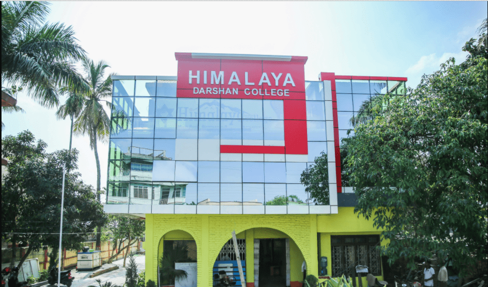

Welcome Himalaya Darshan College, established in 2070 B.S. provides innovative opportunities in highly academic environment. The College has been established with an objective to promote value based quality education at the graduate level. The college fosters personal and professional growth of the students through its experienced and distinguished faculties, experts and professional from the national level.